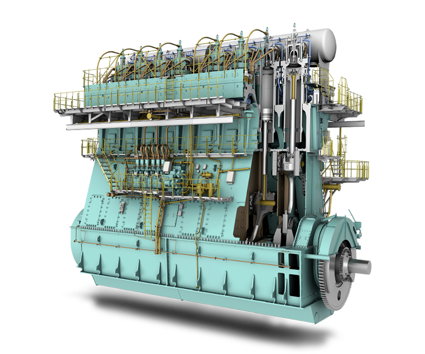

Main characteristics
Model: WinGD X35-B
Type: 4 stroke
Weight: 74 t
Fuel: Diesel
Cylinders: 5
Cylinder bore: 350 mm
Piston stroke: 1550 mm

Main data
Shaft speed: 25 knots
Shaft power: 120 rpm
Avg.temp: 73 C°
Mean effective pressure: 21.0 bar
Fuel consumption: 2907 kg/h
Run time: 15 hrs
Engine stress